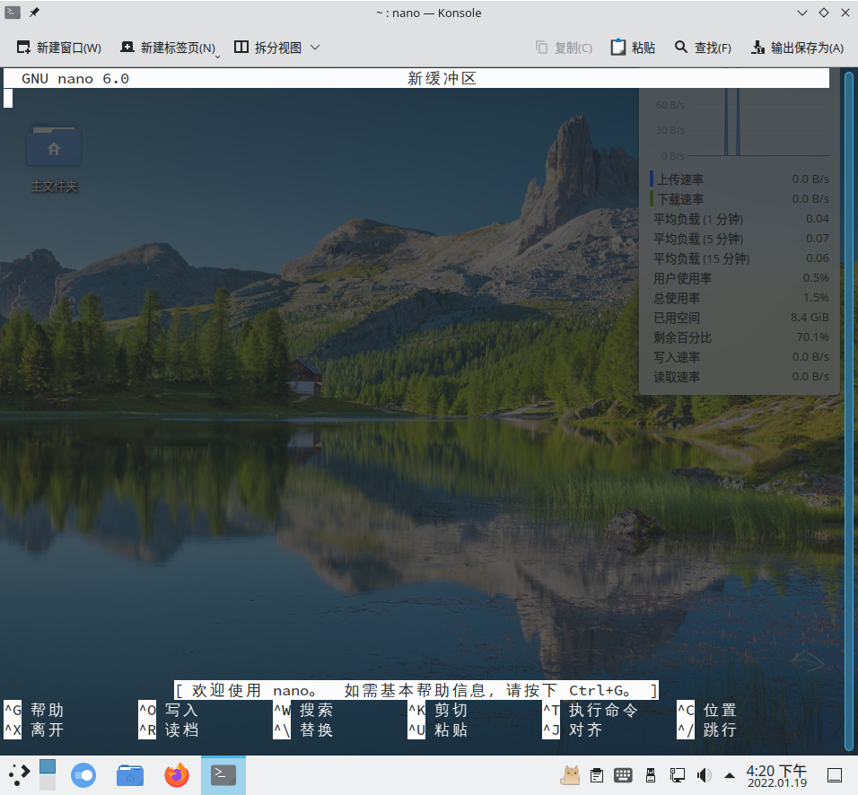

运用文本文件
与 Windows 不同，你可以通过编辑储存于特定目录（比如 /etc）的纯文本文件来实现对于系统配置的修改和管理系统。
使用文本编辑器编辑文件
Linux 终端常用的文本编辑器有很多，其中比较知名的有 Vim、Emacs 和 Nano
流行的图形化的文本编辑器还有：KDE Kate、Gnome Gedit、Xfce Mousepad 和微软的 Visual Studio Code。前三者分别是各个主流桌面环境内置的默认文本编辑器，VScode 则是近年来由微软开发，广受开发人员好评的一个富文本编辑器。
如果你想要深入了解如何在命令行界面中工作，Emacs 和 Vim 是两个功能强大，扩展丰富，值得信赖的专业工具集。
如果你只是偶尔用用命令行界面，你可以简单学习一下如何使用 Nano 编辑文件。
使用 Nano
Nano 一般已经安装到你的 Linux 中，打开终端，输入 $ nano

如上图所示，Nano 是一个功能简单，界面友好的轻量级编辑器。底部有快捷键提示。要查询更多信息，按下 Ctrl + G 即可打开用户手册，按 q 即可退出手册页。
你可以使用方向键控制光标的位置，同时使用鼠标进行辅助（如选中内容，上下翻页）。快捷键组合中的 ^ 是指 Ctrl 键。编辑完文件后，注意保存（Ctrl + O）然后再退出编辑器（Ctrl + X）。
你可以使用 nano 编辑指定路径的文件，如 $ nano ~/.bashrc，如果你编写的文件并不存在，Nano 会在你保存后创建该文件。
搜索文件
使用 locate 按文件名搜索文件
一般而言，Linux 有一个名为 updatedb 的后台进程每日都会运行一次，将整个系统的所有文件的文件名导入到一个数据库中。你可以使用 locate 命令检索这个数据库。
有关于 locate 命令需要知道的几件事：
locate命令和find命令相比，各有优劣。locate搜索速度更快是因为它只要检索一个数据库而不是整个文件系统。因此，locate受限于数据库刷新的滞后性，在数据库更新前无法检索到新添加的文件。- 数据库不会记录所有的文件。
/etc/updatedb.conf文件的内容通过删除选择的挂载类型、文件系统类型、文件类型和挂载点来限制收集某些文件名。例如，数据库不会收集挂载的远程文件系统（如 NFS）。用于存储临时文件的目录（/tmp）和假脱机文件（/var/spool/cups）也被排除在外。
你可以编辑/etc/updatedb.conf，将不需要被记录的内容添加到PRUNEPATHS或PRUNENAMES中。或者删除某些内容来启用记录。[bh@c004-v1 ~]$ cat /etc/updatedb.conf PRUNE_BIND_MOUNTS = "yes" PRUNEFS = "9p afs anon_inodefs auto autofs bdev binfmt_misc cgroup cifs coda configfs cpuset debugfs devpts ecryptfs exofs fuse fuse.sshfs fusectl gfs gfs2 gpfs hugetlbfs inotifyfs iso9660 jffs2 lustre mqueue ncpfs nfs nfs4 nfsd pipefs proc ramfs rootfs rpc_pipefs securityfs selinuxfs sfs sockfs sysfs tmpfs ubifs udf usbfs ceph fuse.ceph" PRUNENAMES = ".git .hg .svn .bzr .arch-ids {arch} CVS" PRUNEPATHS = "/afs /media /mnt /net /sfs /tmp /udev /var/cache/ccache /var/lib/yum/yumdb /var/lib/dnf/yumdb /var/spool/cups /var/spool/squid /var/tmp /var/lib/ceph /var/lib/mock /sysroot/ostree/deploy"
作为一个普通用户，你同样无法使用 locate 检索你无权访问的文件（比如 /root 中的文件）。
- 当你搜索一串字符串的时候，这串字符可能会出现在路径、文件名或目录名中（比如搜索
passwd，结果就包含了/etc/passwd、/etc/pam.d/passwd等）。 - 要手动更新数据库，只需要以 root 权限重新运行一遍
# updatedb即可。 - 要查询文件系统中匹配字符串的所有文件或路径，你需要使用 root 权限。
使用 find 搜索文件
存储于文件索引节点的元数据包含了文件的所有者、所属用户组、时间戳、文件大小、权限和其他信息。
find 也是一个常用的用于检索文件的工具。找到文件后，你也可以通过运行任何你想要的命令来处理这些文件（使用 -exec 或 -okay 选项）。
由于 find 不依赖数据库而实时检索指定的文件夹（并不建议使用 find 搜索整个文件系统），所以 find 一般比 locate 花费更长的时间但能更精准地发现文件。
find 的另一个特色功能就是，你可以将几乎所有的文件属性（文件名、目录名、路径、权限、所有权、大小或最后编辑时间等）当作命令选项来搜索文件。
$ find
$ find /etc
# find $HOME -ls
如上，直接使用 find 命令，find 会直接列出当前文件夹的全部文件和目录。如果你需要搜索特定的目录，只需要将此目录作为选项加到 find 命令的后面（如第二个命令，你一般会遇到报错信息，如果你要搜索 ~ 以外的目录，有时候需要使用 root 权限来访问某些权限受限文件夹。）。第三个样例使用了 -ls 的选项（它的效果类似于 $ ls -l）。
通过名称查找文件
要使用名称来查找文件，你需要使用 -name 和 -iname 选项。命令只搜索文件的基本名称，默认不会搜索目录的名称。为了使搜索更加灵活，你还可以使用元字符（如 * 和 ? 等字符）来帮助你进行模糊搜索。如下：
[bh@c004-v1 ~]$ sudo find /etc -name passwd
/etc/pam.d/passwd
/etc/passwd
[bh@c004-v1 ~]$ sudo find /etc -iname '*passwd*'
/etc/pam.d/passwd
/etc/security/opasswd
/etc/passwd-
/etc/passwdqc.conf
/etc/passwd
如上，第一个使用 -name 选项，不带星号的命令会精准匹配 /etc 目录下所有名为 passwd 的文件。第二个使用 -iname 选项，带有星号的命令会匹配所有带有 passwd 字符串（不区分大小写）的文件。
- 注意，
find命令默认的起始搜索位置是你的工作目录（$PWD）。要搜索其他目录，你需要为find设置一个路径参数。
通过大小查找文件
你可以使用 -size 选项查询特定大小的文件。
# find /usr/share -size +10M
$ find $HOME -size +20M -size -50M
如上，第一个命令用去查找 /usr/share 文件夹中大小大于 10MB 的文件。第二个命令用于查询用户目录下，大小介于 20MB 和 50MB 之间的文件。
通过用户名查找文件
你可以使用 -user 和 -group 选项查询归属于特定用户和特定用户组的文件。通过使用 -not（非） 和 -or（或），你可以优化与特定用户和组关联的文件的搜索，如下：
$ find $HOME -not -user $USER -ls
# find /usr -user $USER -ls
# find /var/spool -not -group root -ls
如上，第一个例子用于查找 $HOME 目录下不属于 $USER 用户的文件。第二个命令用户查找 /etc 下属于 $USER 用户的文件。第三个命令用户查找 /var/spool 下不属于 root 用户组的文件。
通过权限查找文件
你可以使用 -perm 选项，让 find 命令查找符合权限要求的文件。如果使用数字代表权限查找文件，在数字前加上连字符（-），表示的三个位都必须匹配；数字前面有斜杠（/），表示任何一个数字都可以匹配，以便搜索找到一个文件。如果既不使用连字符，也不使用斜杠，则表示完整的、精确的数字必须匹配。
$ find /usr/bin -perm 755 -ls
$ find $HOME -perm -222 -type d -ls
$ find ~ -perm /222 -type f
$ find ~ -perm -002 -type f -ls
如上，第一个例子中，find 会精准匹配任何具有 rwxr-xr-x 权限的文件或文件夹。第二个例子中，find 会匹配对于文件所有者、文件所属组和其他用户均具有写入权限的文件夹；-type 选项用于表示查找文件 f 或文件夹 d，如果不声明该选项，则 find 会同时查找文件夹和文件。
第三个例子中，find 会匹配对于文件所有者、文件所属组或其他用户具有写入权限的文件。第四个例子中，find 会匹配对于其他用户具有写入权限的文件。
通过日期和时间查找文件
每当创建、访问、修改和修改元数据的时候，文件的日期和时间戳都会变更。
$ find /etc/ -mmin -10
$ find /bin /usr/bin /sbin /usr/sbin -ctime -3
$ find /var/ftp /var/www -atime +300
如上，第一个例子中，find 会查找 /etc 目录下过去十分钟发生变更的文件。第二个例子中，find 会搜索系统以查看在过去三天内是否有任何命令的所有权或权限发生了更改。第三个例子中，find 会在 FTP 服务器 (/var/ftp) 和 Web 服务器 (/var/www) 中查找超过 300 天未访问的文件，以便查看是否需要删除。
time 选项（-atime、-ctime 和 -mtime）使你能够根据每个文件被访问（accesse）、更改（change）或元数据更改后（metadata changed）的天数进行搜索。min 选项（-amin、-cmin 和 -mmin）也是相同的用法，不过时间计量单位是分钟。
使用 not 和 or 进行查找文件
查找文件然后执行命令
使用 grep 搜索文件
grep 是另一个常用于检索信息的工具。它可以检索文件包含的信息（而不是只搜索元数据）。
搜索时，你可以在屏幕上打印包含该术语的每一行（标准输出），或者仅列出包含该搜索词的文件的名称。默认情况下，grep 以区分大小写的方式搜索文本，但你也可以进行不区分大小写的搜索。
除了搜索文件，你还可以使用 grep 搜索标准输出。因此，如果一个命令输出大量文本，而你只想查找包含特定文本的行，则可以使用 grep 来过滤你想要的内容。
bh@localhost:~> cat ~/test
Linux
linux
LINUX
GNU/Linux
Fedora
bh@localhost:~> grep Linux ~/test
Linux
GNU/Linux
bh@localhost:~> grep -i Linux ~/test
Linux
linux
LINUX
GNU/Linux
bh@localhost:~> grep -vi linux ~/test
Fedora
如上，使用 grep 检索 ~/test 文件中包含 Linux 关键字的行。-i 选项可以让 grep 忽略大小写，匹配全部结果。-v 选项相当于反选，用于检索出不包含关键字的行。
要进行递归搜索（recursive searches），请使用 -r 选项和被搜索目录作为参数。以下示例包含 -l 选项，它仅列出包含搜索文本的文件，而不显示实际的文本行。该搜索会找到包含文本 peerdns（不区分大小写）的文件。如下：
$ grep -rli peerdns /usr/share/doc/
下一个示例递归地在 /etc/sysconfig 目录中搜索关键字 root。它列出了包含该文本的目录下每个文件中的每一行。为了更容易让 root 在每一行中更显眼，你可以添加了 --color 选项。默认情况下，匹配的关键字显示为红色。
$ grep -ri --color root /etc/sysconfig/
要在命令的输出中搜索某个关键字，可以将输出通过管道（|）传递给 grep 命令。在此示例中，我知道 IP 地址列在 ip 命令的输出行中，其中包含字符串 inet，因此我使用 grep 仅显示这些行：
$ ip addr show | grep inet